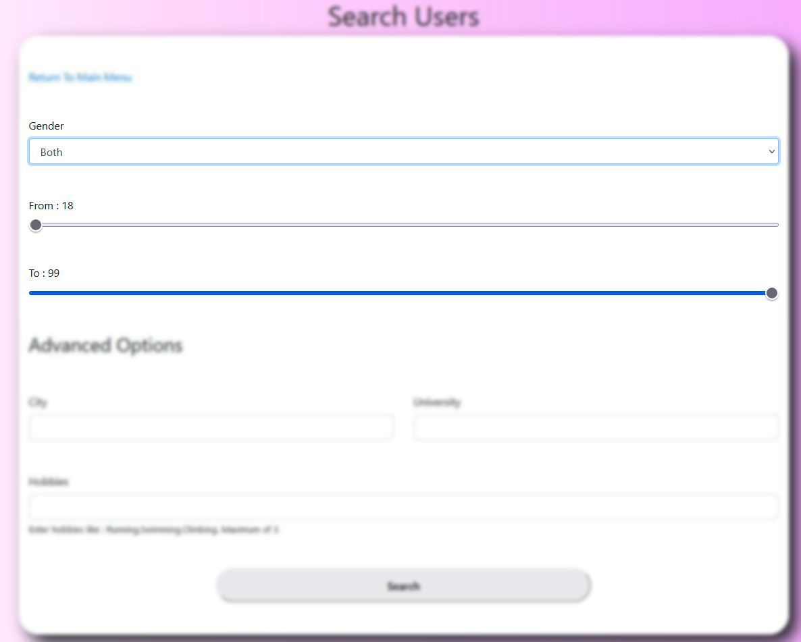
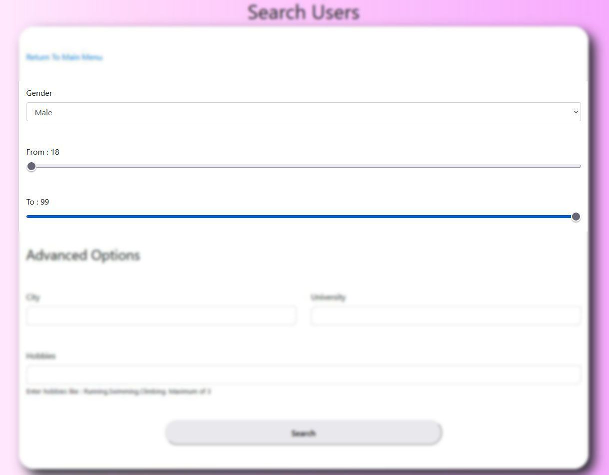
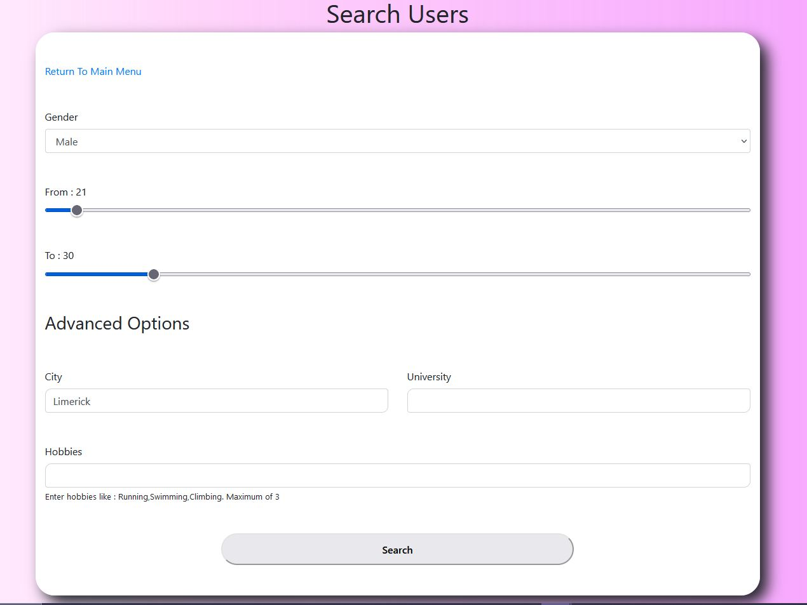
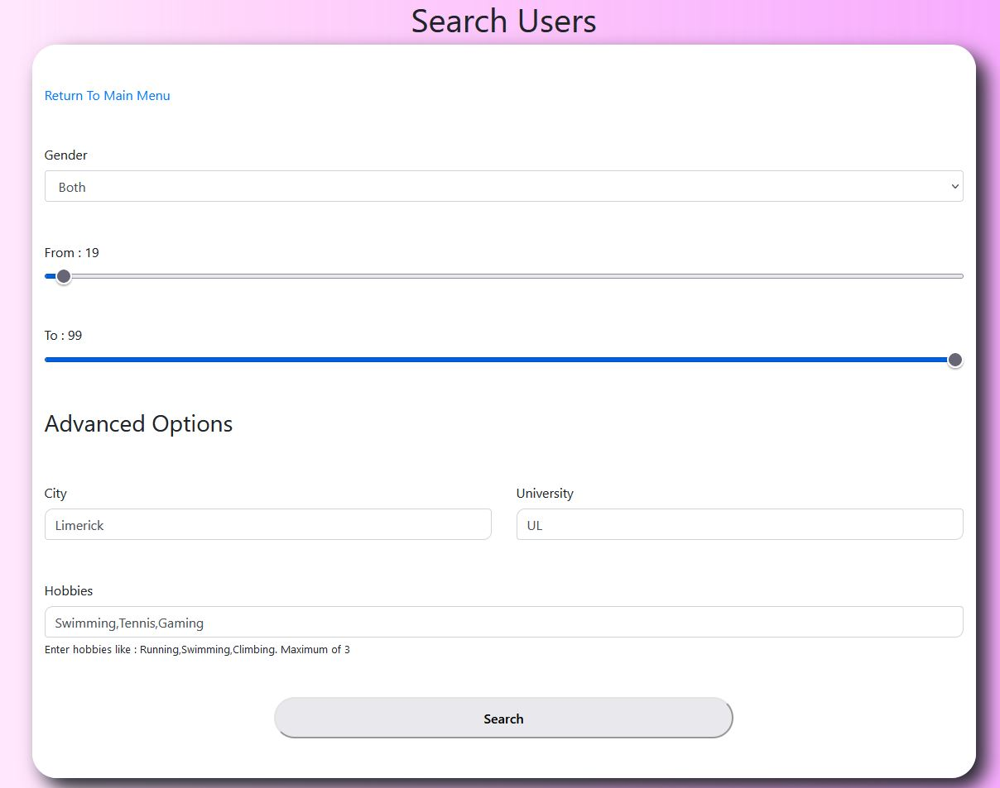
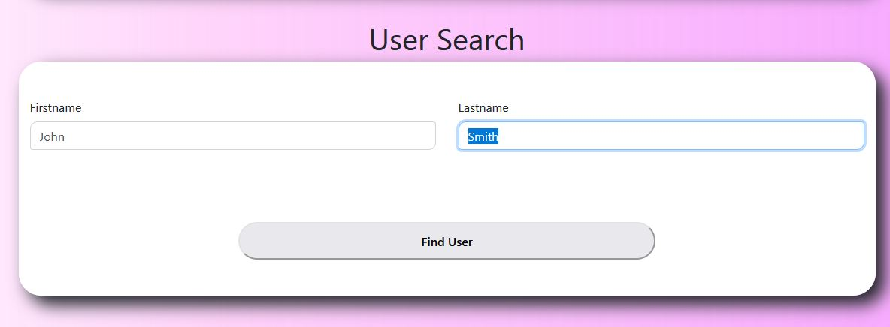

If you would like to find all users you can just set gender to both and the age limited to 18 - 99 then click search, you will then be presented with all users on our database
Gender based search can be done by setting gender to Male or Female and age limit to 18 - 99, you will see all male or all female users on the database
More specific search can be done, for example this search will only show you male users from Limerick between the ages of 21 and 30
Advance searchs can be made, for example this search you will find all users on the database from Limerick, attend UL and one of their hobbies is either Swimming, Tennis or Gaming Extremely advanced searches may result in no users being found
You can search for exact users using their first and lastname
If no user can be found you will see this screen